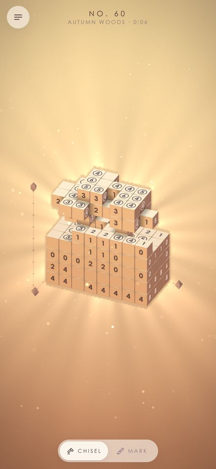
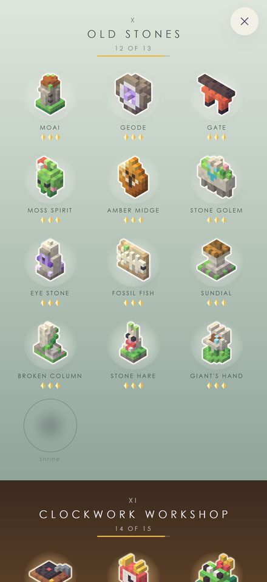

Chisel the stone. Find what it's keeping.
Every stone in Strata hides a small thing: a fox curled asleep, a lantern, a coelacanth. Numbers on the stone's faces count how many of its cubes lie in each row, running across, down or back. Tap to break away the cubes that don't belong, hold to mark the ones you mean to keep, and turn the stone in your hands. Peel back its layers to see inside, and the shape comes slowly out of the rock.
It is a nonogram, the picture-logic puzzle, in three dimensions.
- 182 stones across 15 chapters, from First Light to Starfall
- Gems for a steady hand, never for speed; a slip can be taken back
- Short lessons, and a gentle glow when you're stuck
- Plays offline, with no ads, purchases or accounts



Contact
Questions, problems, or anything else: support@mythen.io. Kellan reads every message.